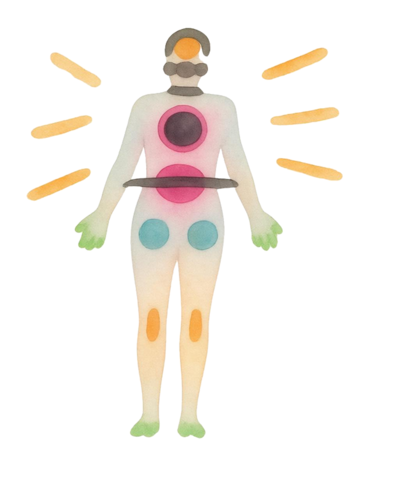
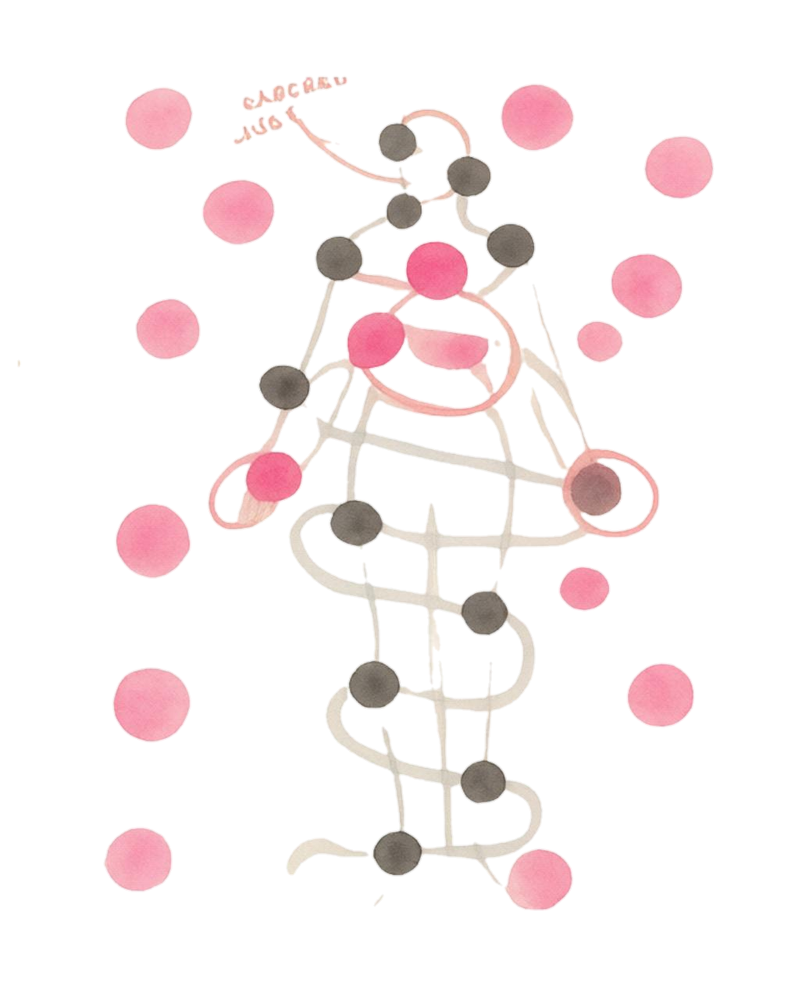

Embodied Vulnerability in Design Research
Methods, Ethics, and Care
“Vulnerability is the first thing I look for in you, but it's the last thing I want you to see in me. In you, it's courage. In me, it's inadequacy. In you, it's strength and lovability. In me, it's shame.”— Brené Brown, The Power of Vulnerability
Abstract
HCI and design research frequently engage with vulnerability in contexts of care, health, and life transitions, yet often overlooks how vulnerability is sensed and enacted through the body. This one-day workshop foregrounds vulnerability as an embodied phenomenon that unfolds in interaction, prior to and beyond language. Participants explore vulnerability through shared experiential inquiry: through carefully facilitated embodied activities, collective reflection, and methodological experimentation, participants will attend to embodied, sensory, and relational experiences of vulnerability in their own research practices. The workshop offers a safe, ethically attentive space in which participants experiment with translating non-verbal experiences into communicable forms that can inform design inquiry. We aim to cultivate a shared vocabulary, methodological sensibilities and practical techniques for engaging embodied vulnerability in design research, and lay the foundations for ongoing community building around care-oriented approaches in HCI and design.
Call for Participation
We invite researchers, designers, and practitioners interested in vulnerability, embodiment, care, and ethics in HCI and design to participate in this one-day workshop. The workshop brings together participants who are curious about how vulnerability is lived, sensed, and negotiated through bodies, relationships, and interactions - particularly within research and design practices engaging with health, wellbeing, care, life transitions, or other sensitive contexts.
We welcome participants from diverse methodological and disciplinary backgrounds, including (but not limited to): participatory design, soma design, embodied interaction, research in sensitive settings, disability studies, feminist approaches, and care-oriented design. Prior experience with embodied methods is not required; openness, attentiveness, and care for oneself and others are essential.
How to Apply
We invite applicants to submit a short reflective or creative contribution that conveys their interest in the workshop and their relation to its theme. Submissions may be individual or collaborative. Applicants may choose from the following formats:
- A written reflection (1–2 pages) describing a research or design context in which vulnerability was sensed and what questions or tensions emerged from that experience.
- A pictorial, poster or zine that visually communicates a research context, question, or tension related to vulnerability and embodiment.
- A visual or experiential artifact, such as a sketch, diagram, photo essay, collage, or other visual material, accompanied by a short explanatory text (300–500 words).
- An audio or video reflection (3–5 minutes) sharing a moment, bodily experience, or methodological dilemma related to vulnerability and embodiment in research or design practice.
- A hybrid or alternative format that the applicant feels meaningfully conveys their ideas, perspective and curiosity in relation to the workshop theme.
What to Include
Regardless of format, submissions should convey:
- The applicant’s background, practice, or research interests.
- A context in which vulnerability was encountered, felt, or negotiated (by researchers, their participants, research process or a combination of these).
- One or two questions, tensions, ethical concerns, or moments of uncertainty the applicant would like to explore through embodied, collective inquiry during the workshop.
For questions, please contact: b.moghe@tue.nl
Selection & Participation
We will select participants to support a diverse, thoughtful, and generative group. At least one author or contributor of each accepted submission must attend the workshop in person. Accepted contributions will be shared with participants ahead of the workshop to support a reflective, careful, and relational collective process. Submissions will not be published in the proceedings; they serve solely as invitations into a shared exploratory space.
Important Dates
| Submission Deadline | May 15, 2026 |
| Notification of Acceptance | June 1, 2026 |
| Workshop Date | June 2026 (TBD) |
Workshop Schedule
Organizers
Bhakti Moghe
is a PhD student at Eindhoven University of Technology, researching vulnerability as an embodied, dynamic process in health and wellbeing contexts, such as life transitions. Her interests are in embodied methods to attend to felt, pre-verbal experiences, exploring how vulnerability is sensed through everyday interactions and design practice.
Maarten Houben
is an Assistant Professor at the Eindhoven University of Technology. He researches and designs multisensory, tangible technologies that enhance well-being in vulnerable contexts, using inclusive co-design methods with users, caregivers, and policymakers to support social, sensory, and aesthetic experiences contributing to quality of life.
Laia Turmo Vidal
is a postdoc at KTH Royal Institute of Technology. Her current research combines touch technologies and soma design to address highly personal and sensitive contexts, such as self-body perception and lived experiences of health.
Anupriya Tuli
is a postdoc at KTH Royal Institute of Technology. With a focus on health equity, she works at the intersection of HCI, global health, and taboo, drawing on feminist perspectives to understand and design sociotechnical experiences that foster safe, just, and equitable futures for all.
Daniel Tetteroo
is an Assistant Professor at the Eindhoven University of Technology. He uses inclusive and participatory research methods to research how socio-technical healthcare systems may be designed to maintain or recover their intended function and value in the face of change.
Kristina Höök
is a Professor at KTH Royal Institute of Technology. Her work centers around Soma Design, a first person, movement-based design practice.